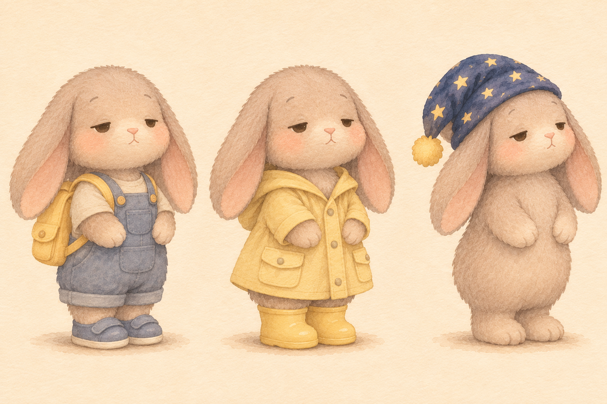
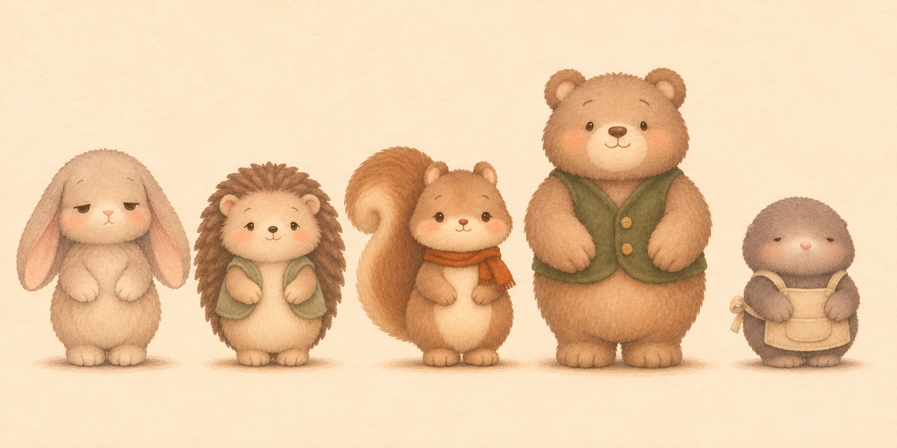
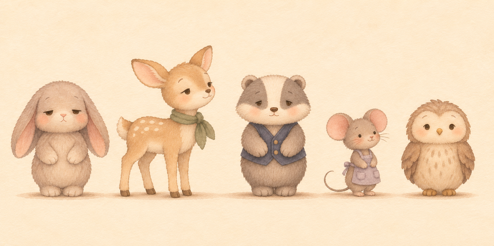

皮皮与朋友们 · 角色图库 v001
首批：皮皮、八位伙伴与山羊老师，共10位角色。10张四视图身份表，另有换装表1张、比例对照2张。
身份图已由助手目视核对并登记，用户视觉验收待审。点击图片查看原图；换装保留身份，同场服装连续。其他配角在首次入镜前另建。
皮皮换装：日间、雨天、睡前

每次使用身份图，再加载本次服装参考；左、中、右分别为day_v001、rain_v001、sleep_v001。
伙伴比例对照
每组都以皮皮为共同参照。仅作粗略组合与构图依据；不以组合图代替单人身份图，也不把示意高度当精密尺寸测量。


静态图片转场对比
左：现有线性叠化；右：同为0.96秒的缓入缓出。仅用旧001原图评估，不是第四集成片，未生成新口播。
使用与记录
出图前按角色ID读取索引，验证真实图片与SHA-256，再将加载清单内的路径传入图像工具。每次最多5张参考，人数较多时先准备组合参考，不丢掉任何角色。
初始化说明 · 素材来源与校验 · 角色索引 · 转场评估